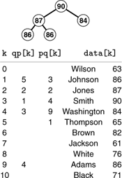
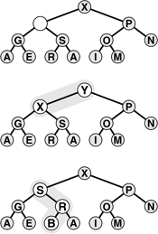

C++ Programming Robert Sedgewick - Princeton University Addison Wesley Professional Algorithms in C++, Parts 1–4: Fundamentals, Data Structure, Sorting, Searching, Third Edition C++ Programming Robert Sedgewick - Princeton University Addison Wesley Professional Algorithms in C++, Parts 1–4: Fundamentals, Data Structure, Sorting, Searching, Third Edition
9.6. Priority Queues for Index Items
Suppose that the records to be processed in a priority queue are in an existing array. In this case, it makes sense to have the priority-queue routines refer to items through the array index. Moreover, we can use the array index as a handle to implement all the priority-queue operations. An interface along these lines is illustrated in Program 9.11. Figure 9.13 shows how this approach might apply in the example we used to examine index sorting in Chapter 6. Without copying or making special modifications of records, we can keep a priority queue containing a subset of the records.
By manipulating indices, rather than the records themselves, we can build a priority queue on a subset of the records in an array. Here, a heap of size 5 in the array pq contains the indices to those students with the top five grades. Thus, data[pq[1]].name contains Smith, the name of the student with the highest grade, and so forth. An inverse array qp allows the priority-queue routines to treat the array indices as handles. For example, if we need to change Smith's grade to 85, we change the entry in data[3].grade, then call PQchange(3). The priority-queue implementation accesses the record at pq[qp[3]] (or pq[1], because qp[3]=1) and the new key at data[pq[1]].name (or data[3].name, because pq[1]=3).

The top diagram depicts a heap that is known to be heap ordered, except possibly at one given node. If the node is larger than its parent, then it must move up, just as depicted in Figure 9.3. This situation is illustrated in the middle diagram, with Y moving up the tree (in general, it might stop before hitting the root). If the node is smaller than the larger of its two children, then it must move down, just as depicted in Figure 9.3. This situation is illustrated in the bottom diagram, with B moving down the tree (in general, it might stop before hitting the bottom). We can use this procedure as the basis for the change priority operation on heaps, to reestablish the heap condition after changing the key in a node; or as the basis for the remove operation on heaps, to reestablish the heap condition after replacing the key in a node with the rightmost key on the bottom level.

Using indices into an existing array is a natural arrangement, but it leads to implementations with an orientation opposite to that of Program 9.8. Now it is the client program that cannot move around information freely, because the priority-queue routine is maintaining indices into data maintained by the client. For its part, the priority queue implementation must not use indices without first being given them by the client.
To develop an implementation, we use precisely the same approach as we did for index sorting in Section 6.8. We manipulate indices and overload operator< such that comparisons reference the client's array. There are added complications here, because it is necessary for the priority-queue routine to keep track of the objects, so that it can find them when the client program refers to them by the handle (array index). To this end, we add a second index array to keep track of the position of the keys in the priority queue. To localize the maintenance of this array, we move data only with the exch operation, then define exch appropriately.
A full implementation of this approach using heaps is given in Program 9.12. This program differs only slightly from Program 9.5, but it is well worth studying because it is so useful in practical situations. We refer to the data structure built by this program as an index heap. We shall use this program as a building block for other algorithms in Parts 5 through 7. As usual, we do no error checking, and we assume (for example) that indices are always in the proper range and that the user does not try to insert anything on a full queue or to remove anything from an empty one. Adding code for such checks is straightforward.
Program 9.11. Priority queue ADT interface for index items|
Instead of building a data structure from the items themselves, this interface provides for building a priority queue using indices into a client array. The insert, remove the maximum, change priority, and remove routines all use a handle consisting of an array index, and the client overloads operator< to compare two array entries. For example, the client program might define operator< so that i < j is the result of comparing data[i].grade and data[j].grade.
template <class Index>
class PQ
{
private:
// Implementation-dependent code
public:
PQ(int);
int empty() const;
void insert(Index);
Index getmax();
void change(Index);
void remove(Index);
};
|
We can use the same approach for any priority queue that uses an array representation (for example, see Exercises 9.50 and 9.51). The main disadvantage of using indirection in this way is the extra space used. The size of the index arrays has to be the size of the data array, when the maximum size of the priority queue could be much less. Another approach to building a priority queue on top of existing data in an array is to have the client program make records consisting of a key with its array index as associated information, or to use an index key with a client-supplied overloaded operator<. Then, if the implementation uses a linked-allocation representation such as the one in Programs 9.9 and 9.10 or Exercise 9.41, then the space used by the priority queue would be proportional to the maximum number of elements on the queue at any one time. Such approaches would be preferred over Program 9.12 if space must be conserved and if the priority queue involves only a small fraction of the data array.
Program 9.12. Index-heap-based priority queue|
This implementation of Program 9.11 maintains pq as an array of indices into some client array. For example, if the client defines operator< for arguments of type Index as indicated in the commentary before Program 9.11, then, when fixUp compares pq[j] with pq[k], it is comparing data.grade[pq[j]] with data.grade[pq[k]], as desired. We assume that Index is a wrapper class whose object can index arrays, so that we can keep the heap position corresponding to index value k in qp[k], which allows us to implement change priority and remove (see Exercise 9.49). We maintain the invariant pq[qp[k]]=qp[pq[k]]=k for all k in the heap (see Figure 9.13).
template <class Index>
class PQ
{
private:
int N; Index* pq; int* qp;
void exch(Index i, Index j)
{ int t;
t = qp[i]; qp[i] = qp[j]; qp[j] = t;
pq[qp[i]] = i; pq[qp[j]] = j;
}
void fixUp(Index a[], int k);
void fixDown(Index a[], int k, int N);
public:
PQ(int maxN)
{ pq = new Index[maxN+1];
qp = new int[maxN+1]; N = 0; }
int empty() const
{ return N == 0; }
void insert(Index v)
{ pq[++N] = v; qp[v] = N; fixUp(pq, N); }
Index getmax()
{
exch(pq[1], pq[N]);
fixDown(pq, 1, N-1);
return pq[N--];
}
void change(Index k)
{ fixUp(pq, qp[k]); fixDown(pq, qp[k], N); }
};
|
Contrasting this approach to providing a complete priority-queue implementation to the approach in Section 9.5 exposes essential differences in abstract-data-type design. In the first case (Program 9.8, for example), it is the responsibility of the priority queue implementation to allocate and deallocate the memory for the keys, to change key values, and so forth. The ADT supplies the client with handles to items, and the client accesses items only through calls to the priority-queue routines, using the handles as arguments. In the second case, (Pro-gram 9.12, for example), the client program is responsible for the keys and records, and the priority-queue routines access this information only through handles provided by the user (array indices, in the case of Program 9.12). Both uses require cooperation between client and implementation.
Note that, in this book, we are normally interested in cooperation beyond that encouraged by programming language support mechanisms. In particular, we want the performance characteristics of the implementation to match the dynamic mix of operations required by the client. One way to ensure that match is to seek implementations with provable worst-case performance bounds, but we can solve many problems more easily by matching their performance requirements with simpler implementations.
Exercises | 9.48 Suppose that an array is filled with the keys E A S Y Q U E S T I O N. Give the contents of the pq and qp arrays after these keys are inserted into an initially empty heap using Program 9.12. | |  9.49 Add a remove operation to Program 9.12. 9.49 Add a remove operation to Program 9.12.
| | 9.50 Implement the priority-queue ADT for index items (see Program 9.11) using an ordered-array representation for the priority queue. | | 9.51 Implement the priority-queue ADT for index items (see Program 9.11) using an unordered-array representation for the priority queue. | | 9.52 Given an array a of N elements, consider a complete binary tree of 2N elements (represented as an array pq) containing indices from the array with the following properties: (i) for i from 0 to N - 1, we have pq[N+i]=i; and (ii) for i from 1 to N - 1, we have pq[i]=pq[2*i] if a[pq[2*i]]>a[pq[2*i+1]], and we have pq[i]=pq[2*i+1] otherwise. Such a structure is called an index heap tournament because it combines the features of index heaps and tournaments (see Program 5.19). Give the index heap tournament corresponding to the keys E A Q U E S T I O N. | |  9.53 Implement the priority-queue ADT for index items (see Program 9.11) using an index heap tournament (see Exercise 9.45). 9.53 Implement the priority-queue ADT for index items (see Program 9.11) using an index heap tournament (see Exercise 9.45).
|
|